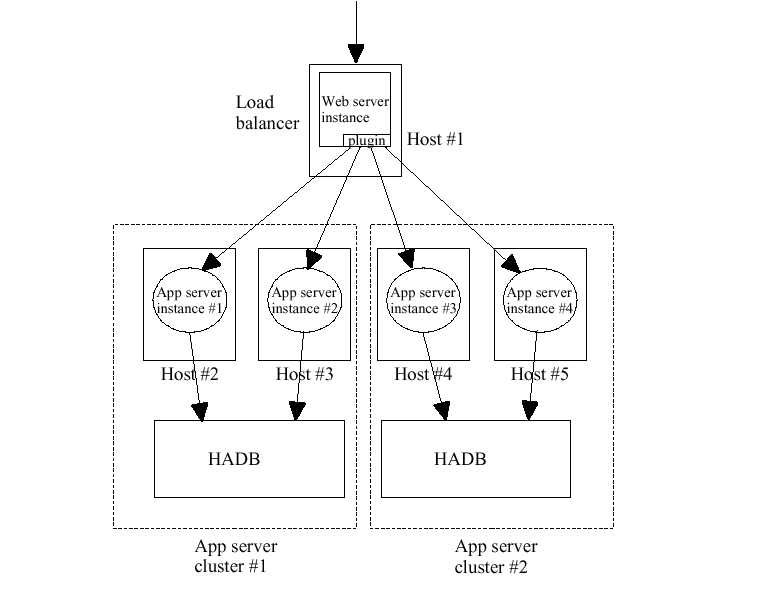

GlassFish
Project - Load Balancer Administration home page
New
to GlassFish |
Community
Guidelines |
Downloads
|
FAQ
|
How-Tos
Welcome to the Load Balancer Administration page. This page is
dedicated
to discussing the Clustering and Load Balancer Administration
features in
GlassFish.
The source code for these features is part of this cvs repository.
Load Balancer Administration News
- Load Balancer admin team is meeting every Friday 9 a.m. (U.S Pacific Time) to talk about the status and issues. Please participate. You can check out the weekly meeting agenda and mintues.
. (October 06, 2006)
- Check out Prashant's article on Setting up F5 Network's BIG-IP System
with Application Server. (September
25, 2006)
- A Instructions
to setup SSL connection between DAS and Load Balancer, so that DAS can update loadbalancer whenever configuration is changed. This avoid manual export and copy of configuration from DAS to Load Balancer. Once this is setup, monitoring information can also be obtained from Load Balancer. (September
07, 2006)
- A blog
about using APS installer to setup LB plug-in is posted.
It has less number of steps than the manual configuration of LB plug-in (August
25, 2006)
- A presentation
about clustering and steps to setup HTTP LB plug-in on Sun Web Server.
It also covers user experience of Load Balancer administration. (August
24, 2006)
Page Contents
Overview
In order to scale for large amounts of load, it is typical to use multiple server instances in enterprise environments. Typically a load balancer is used in front of these cluster of instances. Please refer to
EE quick start guide for more details on clustering. GlassFish does not any place special requirements on the load balancer. Any hardware or software load balancer can be used. GlassFish has documentation on configuring
Sun HTTP LB plugin (works on Sun Web Server, Microsoft IIS and Apache),
Apache mod_jk,
Sun Secure Application Switch and
F5 BIG-IP.
Sun HTTP LB plug-in has the following features:
-
Sticky RR Load Balancing
-
Can support multiple clusters
-
Rapid HTTP request failover (<30 ms)
-
Configurable Health checking to re-enlist server
-
Check for dynamic changes changes to Load Balancer configuration and re-load the changes
-
Support for Quiescence - enables rolling web service upgrade
-
Automatic retry of failed requests for idempotent URLs
-
Configurable error pages
The following picture shows Sun HTTP LB plug-in being used in 2 cluster (4 instances on 4 hosts) configuration.  Sun HTTP LB plug-in stores its configuration in loadbalancer.xml. Instead of asking users to manually edit this loadbalancer.xml, we can generate loadbalancer.xml. This reduces chances of manual errors. In Glassfish, a load balancer configuration is a named configuration in
the
domain.xml file. Load balancer configuration can contain clusters or stand alone instances. The following command generates the loadbalancer.xml for cluster by name cluster1.
asadmin configure-http-lb-config --target cluster1 "C:\loadbalancer.xml".
This command will do the following:
- asadmin create-http-lb-config --target cluster1 cluster1-lb-config
- asadmin enable-http-lb-server cluster1 (by default, all server instances are disabled in the load balancer)
- asadmin enable-http-lb-application --name clusterjsp cluster1 (by default, all applications are disabled in the load balancer)
- asadmin export-http-lb-config --config cluster1-lb-config "C:\loadbalancer.xml"
The sample generated xml file can be viewed here:
loadbalacer.xml. GUI can alse be used to export the LB configuration file. From GUI select HTTP Load Balancers, select New, choose name and targets of the load balancer. You can skip step 2 screen. It is optional and click finish. To export click on the newly created load balancer, choose export tab and click on Export Now button. GUI shows the location where the loadbalancer.xml is generated. Screenshots can be viewed here -
creating a load balancer configuration and
exporting a load balancer configuration. Once this loadbalancer.xml is copied to Sun HTTP LB installation directory, this configuration is reloaded and the load balancer is ready to forward clusterjsp application requests to the cluster (cluster1).
Load balancer configuration is extremely
flexible:
-
Each load balancer configuration can have multiple load
balancers
associated with it, though each load balancer has only one load
balancer configuration.
-
A load balancer services only one domain, though a domain can
have
multiple load balancers associated with it.
The Configuration Model
New element called policy and attributes
called policy-module and weight are added.
For the complete load balancer configuration model, please
refer to sun-loadbalancer_1_2.dtd
CLI Commands
Please refer to
CLI command
reference page for the list of commands
available
for Load Balancer Administration.
Code-Walkthrough
The GlassFish Load Balancer Administration code is located in
lb-admin
sub module in the repository. The following describes all the sub
packages
in this module.
The Mbeans
sub-package, contains the MBean interface and implementation to manage
Load Balancer configuration. CLI and GUI talks to these MBeans.
Reader
sub-package contains the code that reads the config elements in
domain.xml. These class file use Reader pattern. api package contains
the API for the readers and impl package contains the implementation.
Transform
contains the code the implements the Visitors, which visit the above
readers and populate the elements in loadbalancer.xml.
We read information from loadbalancer.xml using schema2beans. These
generated schema2beans are in Beans
directory.
The logic to the configuration to loadbalancer.xml is in Writer.
Unit/Acceptance Tests
Running
the Quicklook tests is required in this section. In addition to the
Quicklook tests the Load Balancer Administration module has unit tests
developed
which need to pass prior to checking in any code. The setup for running
unit tests is the same as the Quicklook tests. To run just the Load
Balancer Administration unit tests do the following:
Go to glassfish/admin-ee/lb-admin
ant run-all-tests
This will build and run all the all the Load Balancer Administration
unit tests including the
tests
in
tests/com/sun/enterprise/ee/admin/lbadmin
.
Supporting Documentation
This section will be updated with useful documents and information
about the Load Balancer Administration - Tutorials, Blogs and other
useful
links.
ToDo List
The following is non-comprehensive list of developer friendly
Load Balancer Administration ToDo features. Please email
us
if you have questions about current implementation or would like to
contribute towards future ToDo list.
- From GUI, we should provide feature to enable/disable applications and instances in LB.
- Last export time should be displayed in GUI
- Disable "Apply Changes Now" button, when Application Server can not communicate with LB or When is LB host information is not configured.
- Auto Apply should not be enabled by default.
{kind=link}
{kind=link}